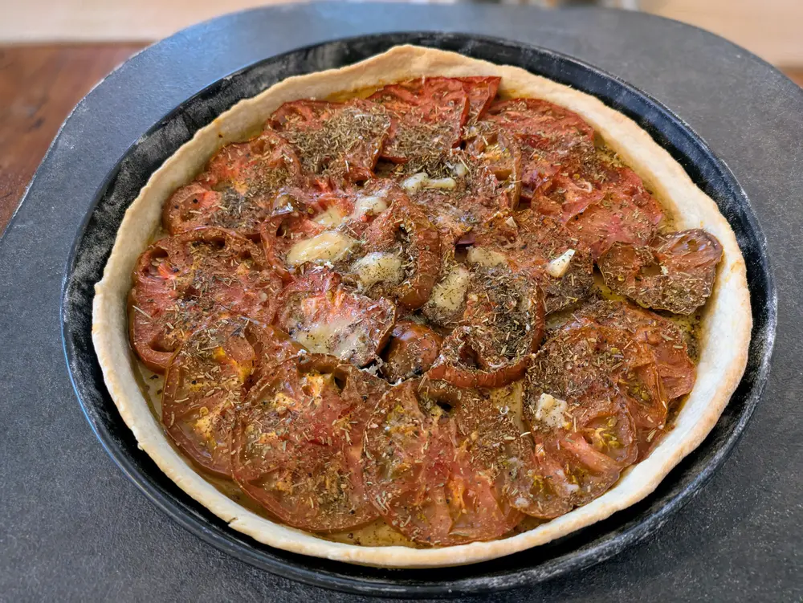

Recipe | Tarte à la tomate

Tarte à la tomate
Ingredients
For 3 people.
A. For the dough
- 250g flour
- 12cl liquid (water and/or milk)
- 4g of salt (~2tsp)
- 30g butter
B. For the pie
- 4 tomatoes
- 1 tbsp mustard (moutarde Dijon/à l'ancienne)
- herbes de Provence
- 1 tbsp olive oil
- salt/pepper
- [optional] cheese (parmesan/comté)
Steps
- Prepare the dough, let it rest in the fridge if needed
- Roll the dough, let it bake alone for ~5 minutes at ~200°C
- Spread a layer of mustard at the bottom
- Slice the tomatoes and layer them to cover the pie, drizzle oil on top
- [optional] grate some cheese
- Sprinkle herbes de Provences, add salt/pepper
- Bake for ~30 minutes at ~200°C